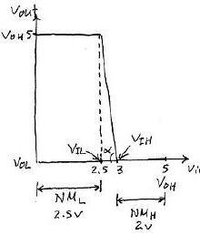
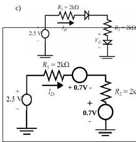
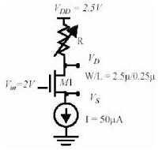
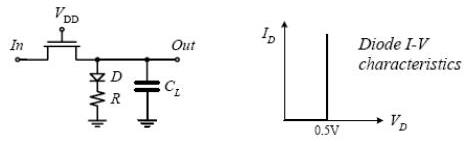
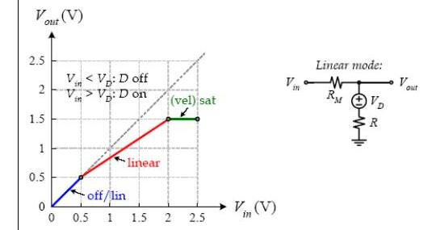

· EEM312
EEM312 Sayısal Elektronik: Ara Sınavlar ve Çözümleri (2007–2010)
EEM312 – Sayısal Elektronik · 09.04.2007 · 16.10.2026
Bu yazı, Başkent Üniversitesi EEM312 Sayısal Elektronik dersinin (Prof. Dr. Emin Akata) 2007, 2008, 2009 ve 2010 ara sınavlarını çözümleriyle bir araya getiriyor. Önceki yılların sorularıyla aynı olanlar kısaca belirtildi; 2003–2006 ara sınavları ayrı bir arşiv yazısında. Orijinal Word dosyaları yazının sonunda ZIP olarak indirilebilir.
2007 – 1. ara sınav (09.04.2007)
Soru 1 (30p)
- a) n bölgesi p'ye göre 10 kat fazla katkılı eklemde kıtlık bölgesi daha az katkılı p tarafında, 10 kat geniştir.
- b) Rejeneratif kapı: geçiş bölgesindeki kazanç 1'den büyükse (VTC eğimi 45°'den dik) nominalden sapmış bir sinyal birkaç kademede nominal değerine döner.
- c) Die yield = [1 + (birim alandaki kusur × die alanı)/α]^(−α); die maliyeti = wafer maliyeti / (wafer başına die × die yield).
- d) Kanal boyu modülasyonu: doyumda V_DS arttıkça etkin kanal kısalır, I_D hafifçe artar; eğrilerin doyumda hafif eğimli olmasından görülür.
- e) t_pLH, t_pHL ve t_p'nin β = (W/L)_p/(W/L)_n ile değişimi: β büyüdükçe t_pLH azalır, t_pHL artar; t_p'nin minimumu t_pHL = t_pLH noktasından biraz daha küçük β'dadır.
- f) Düşük besleme geriliminin olumlu ve olumsuz yönleri: enerji karesel olarak azalır, kazanç belirli bir seviyeye kadar artar; ~4kT/q'ya yaklaşınca kapı bozulur, performans düşer, dış gürültüye ve V_T değişimlerine duyarlılık artar.
Soru 2 (24p): Yük sığaları
Bir tersleyici aynı özellikteki 10 tersleyiciyi sürüyor:
| W/L | AD (µm²) | AS (µm²) | PD (µm) | PS (µm) | CJ (fF/µm²) | CJSW (fF/µm) | Cgdo (fF/µm) | Cgso (fF/µm) | Cox (fF/µm²) | Keq | |
|---|---|---|---|---|---|---|---|---|---|---|---|
| NMOS | 1,2/0,25 | 1,2 | 1,2 | 3,2 | 3,2 | 2 | 0,2 | 0,4 | 0,4 | 5 | 0,6 |
| PMOS | 3,2/0,25 | 3,2 | 3,2 | 5,2 | 5,2 | 1,5 | 0,25 | 0,3 | 0,3 | 5 | 0,5 |
| Sığa | İfade | Değer |
|---|---|---|
| C_pmos,drain | K_eqp AD_p CJ_p + K_eqp PD_p CJSW_p | 3,05 fF |
| C_pmos,gate | 10 × [(Cgdo_p + Cgso_p) W_p + C_ox W_p L_p] | 59,2 fF |
| C_pmos,gate-drain | 2 × Cgdo_p W_p | 1,92 fF |
| C_nmos,drain | K_eqn AD_n CJ_n + K_eqn PD_n CJSW_n | 1,82 fF |
| C_nmos,gate | 10 × [(Cgdo_n + Cgso_n) W_n + C_ox W_n L_n] | 24,6 fF |
| C_nmos,gate-drain | 2 × Cgdo_n W_n | 0,96 fF |
Soru 3 (23p)
a) V_DD = 5 V, V_OH = 5 V, V_OL = 0 V ve geçiş bölgesi kazancı g = 10 olan tersleyiciye toprak hattından en çok 2,5 V gürültü gelebiliyor. En uygun NM_L ve NM_H nedir?

Yanıt: Toprakta 2,5 V gürültü olduğundan V_IL 2,5 V'un altında olmamalı. g = 10 = (V_OH − V_OL)/(V_IH − V_IL) = 5/0,5 ⇒ V_IH − V_IL = 0,5 V, V_IH = 3 V. Böylece NM_H = V_OH − V_IH = 2 V, NM_L = V_IL − V_OL = 2,5 V; bunlar NM_L ile NM_H'nin birbirine en yakın olabildiği değerlerdir.
b) 2005 ara sınavındaki 1,6 kΩ'luk NMOS devresinin aynısı (yanıt: doğrusal bölge, V_DS = 2,3 V, I_D = 1,06 mA).
Soru 4 (23p): Hangi transistör hangi tür?
Uzun kanallı iki MOSFET (W/L = 2,4 µm/1,2 µm, V_SB = 0) için ölçümler:
| Durum | MOSFET-A akımı (mutlak) | MOSFET-B akımı (mutlak) |
|---|---|---|
| V_GS = 0, V_DS = 0 | 0 | 0 |
| V_GS = −1 V, V_DS = −2 V | 20 µA | 0 |
| V_GS = 1 V, V_DS = 1 V | 0 | 45 µA |
| V_GS = 1 V, V_DS = 0,02 V | 0 | 4 µA |
| V_GS = −2 V, V_DS = −2 V | 200 µA | 0 |
Yanıt: Negatif V_GS ve V_DS'de akım akan A PMOS, pozitif gerilimlerde akım akan B NMOS'tur.
- PMOS (A): 2. ve 5. ölçümler doyumda; I_D = ½ k_p (V_GS − V_T)². Oran: 10 = (−2 − V_T)²/(−1 − V_T)² ⇒ (−2 − V_T)/(−1 − V_T) = 3,16 ⇒ V_Tp = −0,537 V. −20 × 10⁻⁶ = ½ k_p (−0,463)² ⇒ k_p = −187 × 10⁻⁶ ⇒ k′_p = k_p/(W/L) = −93,5 × 10⁻⁶ A/V².
- NMOS (B): 3. ölçüm doyumda (45 µA = ½ k_n (1 − V_T)²), 4. ölçüm (V_DS = 0,02 V) doğrusal bölgede (4 µA ≈ 0,02 k_n (1 − V_T)). Oran: 45/4 = 25 (1 − V_T) ⇒ V_Tn = 0,55 V; k_n = 444,4 × 10⁻⁶ ⇒ k′_n = 222,2 × 10⁻⁶ A/V².
Not: Çözümde k′ hesaplanırken W/L "(2,4)/(1,4)" diye yazılmış; verilen W/L = 2,4/1,2 = 2'dir ve sonuçlar (−93,5 ve 222,2 µA/V²) da W/L = 2 ile bulunmuş.
(Puanlar: 1. soru 30p, 2. soru 24p, 3. soru 23p, 4. soru 23p.)
2008 – Ara sınav (09.04.2008)
Soru 1 (30p)
- a) Soketteki PMOS'un drain ve source bacakları ters takılırsa hiçbir şey değişmez; iki bölge fiziksel olarak aynıdır.
- b) MOS transistör doyumda ideal akım kaynağı gibidir; kanal boyu modülasyonu nedeniyle pratikte I_D = I_D′(1 + λV_DS) olur.
- c) DIBL (Drain Induced Barrier Lowering): Artan V_DS, drain ekleminin kıtlık bölgesini genişletir ve gate altında oluşması beklenen kıtlık bölgesine yardım eder. Güçlü evirtim (strong inversion) daha küçük gerilimde oluşur, yani V_T küçülür. V_DS'ye bağlı bu eşik gerilimi bir tür gerilime bağlı gürültüdür; örneğin veri örüntüsünün (dolayısıyla gerilimin) değiştiği bellek yongalarında sorun yaratabilir.
- d) 7 tersleyicili halka osilatörü 2,38 GHz'de: t_p = 1/(2fN) = 30 ps.
- e) NM_H, NM_L, V_OL, V_OH, V_IL, V_IH, V_sw ve belirsiz bölge, V_DD ile GND arasındaki bir çizgi üzerinde gösterilir: V_OH ile V_IH arası NM_H, V_IL ile V_OL arası NM_L, V_IH ile V_IL arası belirsiz bölge, V_OH ile V_OL arası V_sw'dir.
- f) I_D–V_DS grafiğinde hız doyumunda V_GS eğrileri eşit aralıklıdır (I_D, V_GS ile doğrusal); doyumda aralıklar V_GS ile karesel artar.
Soru 2 (20p)
- a) Ters kutuplanmış eklemde terminal akımı 10 nA, drift akımı 15 nA ⇒ difüzyon akımı I_D = I_S − I = 5 nA; sıcaklık artarsa I_S ve terminal akımı artar.
- b) İleri kutuplanmış eklemde azınlık taşıyıcı dağılımı: kutuplama bariyeri alçaltır; delikler n'ye, elektronlar p'ye difüzlenip orada azınlık taşıyıcısı olur ve yeniden birleşene kadar ilerler. Yoğunluk kıtlık bölgesinin hemen kenarında en büyüktür (p_n(W₂), n_p(−W₁)) ve oradan ısıl denge değerine (p_n0, n_p0) üstel olarak düşer.
- c) Basit diyot modeliyle I_D'yi bulunuz; duyarlı çözüm için denklemi yazınız (V_D-on = 0,7 V).

Yanıt: I_D = (V_in − 2V_D-on)/(R1 + R2) = (2,5 − 2 × 0,7)/(2k + 2k) = 275 µA. Duyarlı çözüm için ideal diyot denklemi: I_D = (V_in − 2V_D)/(R1 + R2) = I_S (e^(V_D/nφ_T) − 1); başlangıçta V_D = 0,7 V alınarak iterasyonla çözülür (I_S, φ_T ve n bilinmeli).
Soru 3 (20p): Kısa kanallı NMOS'tan parametre çıkarımı
| V_GS (V) | V_DS (V) | V_BS (V) | I_D (µA) | |
|---|---|---|---|---|
| 1 | 2,5 | 1,8 | 0 | 1812 |
| 2 | 2 | 1,8 | 0 | 1297 |
| 3 | 2 | 2,5 | 0 | 1361 |
| 4 | 2 | 1,8 | −1 | 1146 |
| 5 | 2 | 1,8 | −2 | 1039 |
V_DSAT = 0,6 V, k′ = 100 µA/V². V_T0, λ, γ, 2|φ_F| ve W/L nedir?
Yanıt: Herhangi bir ölçümde (normal) doyum için 2 − V_T < 0,6, yani V_T > 1,4 V gerekirdi; bu çok büyük olduğundan tüm ölçümler hız doyumunda kabul edilir: I_D = k′(W/L) V_DSAT (V_GS − V_T − V_DSAT/2)(1 + λV_DS).
- 1/2 oranı: 1812/1297 = (2,5 − V_T0 − 0,3)/(2 − V_T0 − 0,3) ⇒ V_T0 = 0,44 V (< 1,4 V, varsayım tutarlı).
- 2/3 oranı: 1297/1361 = (1 + 1,8λ)/(1 + 2,5λ) ⇒ λ = 0,08 V⁻¹.
- 2/4 ve 2/5 oranlarından V_T4 = 0,587 V, V_T5 = 0,691 V. 0,587 = 0,44 + γ(√(|2φ_F| + 1) − √|2φ_F|) ve 0,691 = 0,44 + γ(√(|2φ_F| + 2) − √|2φ_F|) oranı 1,7 ⇒ iterasyonla |2φ_F| = 0,6 V, γ = 0,29 V^½.
- 2. ölçümden: 1297 = 100 (W/L) 0,6 (2 − 0,44 − 0,3)(1 + 0,08 × 1,8) ⇒ W/L = 15.
Soru 4 (14p): Test devresi

k′ = 110 µA/V², V_T = 0,4 V, V_DSAT = 0,6 V.
- a) R = 10 kΩ: V_D = 2,5 − 10k × 50 µA = 2 V. Doyum varsayımıyla 50 × 10⁻⁶ = (110 × 10⁻⁶/2)(2,5/0,25)(2 − V_S − 0,4)² ⇒ V_S = 1,3 V. V_GS − V_T = 0,3 V < V_DSAT < V_DS = 0,7 V ⇒ doyum, varsayım doğru.
- b) R = 30 kΩ: V_D = 2,5 − 1,5 = 1 V. Doyum varsayımı V_DS = 1 − 1,3 = −0,3 V verir, olanaksız. Doğrusal bölge varsayımıyla 50 × 10⁻⁶ = 110 × 10⁻⁶ × 10 × (1 − V_S)[(2 − V_S − 0,4) − (1 − V_S)/2] ⇒ V_S = 0,93 V; V_GS − V_T = 0,67 V, V_DS = 0,07 V ⇒ V_DS < V_DSAT, V_GS − V_T: doğrusal bölge.
Soru 5 (16p): V_M = V_DD/2
V_DD = 5 V, k′_n = 40 µA/V², k′_p = 20 µA/V², L_n = L_p = 0,5 µm, W_n = 2 µm, V_T0n = −V_T0p = 1 V; hız doyumu yok.
- a) V_M'de iki transistör de doyumda: (k_n/2)(V_M − V_T0n)² = (k_p/2)(V_M − V_DD − V_T0p)². V_M = V_DD/2 ve V_T0p = −V_T0n konursa k_p/k_n = 1.
- b) k_p/k_n = (µ_p W_p)/(µ_n W_n) = 1 ⇒ W_p = (µ_n/µ_p) W_n = (40/20) × 2 µm = 4 µm.
(Puanlar: 1. soru 30p, 2. soru 20p, 3. soru 20p, 4. soru 14p, 5. soru 16p; süre 100 dk.)
2009 – Ara sınav (10.04.2009)
Soru 1
- a) CMOS'un tercih edilmesinin dört temel nedeni (2003 sınavındaki yanıtın aynısı): geniş V_sw, düşük çıkış empedansı, çok yüksek giriş empedansı ve statik güç tüketiminin olmaması.
- b) Sıcaklık değişimi ters kutuplanmış diyotu daha çok etkiler.
- c) p-n ekleminde n tarafında elektron, p tarafında delik fazlalığı vardır; yoğunluk farkı p'den n'ye bir difüzyon akımı doğurur. Biriken yükler n'den p'ye doğru bir elektrik alanı yaratır ve bu alan ters yönde bir drift akımı oluşturur. İleri kutuplama difüzyon akımını (I_D), ters kutuplama drift akımını (I_S) öne çıkarır.
- d) Gate-channel sığasının V_GS ile değişimi (V_DS = 0): kanal yokken tüm sığa (WLC_ox) gate–body arasındadır; V_GS, V_T'ye yaklaştıkça kıtlık bölgesi oluşur ve sığa düşer. V_GS = V_T'de kanal oluşur, C_GCB sıfırlanır ve sığa gate–drain ile gate–source arasında eşit paylaşılır (C_GCS = C_GCD = WLC_ox/2). Doyuma yaklaşıldıkça drain ucunda kanal kısılır, C_GCD sıfıra düşer ve sığa C_GC = C_GCS = (2/3)WLC_ox olarak gate–source arasında görülür.
- e) CMOS tersleyicinin VTC'si boyunca transistör bölgeleri: V_in = 0'da NMOS kesimde, PMOS iletimde ve V_DSp ≈ 0 olduğundan doğrusal bölgededir. V_in artıp NMOS açılınca V_DSn ≈ V_DD olduğundan NMOS doyumdadır. V_M'de (V_in = V_out) iki transistör de doyumdadır; eğrinin öbür yarısında roller değişir.
Not: 1d yanıtında doyumdaki sığa "C_GC = C_GCS = 2WLC_ox/2" diye yazılmış; bilinen sonuç (2/3)WLC_ox'tur.
Soru 2: Süreç seçimi ve maliyet
| 65 nm CMOS | 90 nm CMOS | |
|---|---|---|
| Maske seti maliyeti | 3.000.000 $ | 800.000 $ |
| Die boyutu | 1,5 cm² | 2 cm² |
| Wafer boyutu | 30 cm | 20 cm |
| Die yield | %78 | %85 |
| Wafer maliyeti | 2.000 $ | 1.200 $ |
| Test maliyeti | 0,68 $/die | 0,68 $/die |
| Paketleme | 0,40 $/yonga | 0,40 $/yonga |
| Son test verimi | %95 | %95 |
500.000 adet satış bekleniyor; hangi süreç daha ekonomik?
Yanıt: Wafer başına die = π (çap/2)² / die alanı − π × çap / √(2 × die alanı).
- 65 nm: 3,14 × 15² / 1,5 − 3,14 × 30 / √3 ≈ 416 die; die maliyeti = 2000 / (416 × 0,78) = 6,16 $; değişken maliyet = (6,16 + 0,68 + 0,40) / 0,95 = 7,62 $; IC başına maliyet = 7,62 + 3.000.000/500.000 = 13,62 $.
- 90 nm: 125 die; die maliyeti 11,29 $; değişken maliyet 13,02 $; IC başına maliyet = 13,02 + 1,6 = 14,62 $.
500.000 adet için 65 nm süreç daha uygundur.
Soru 3: Ölçümlerden V_T0, λ, k′ ve V_DSAT
| Deney | V_GS | V_DS | V_BS | I_D | Bölge |
|---|---|---|---|---|---|
| 1 | 1 V | 0,6 V | 0 | 69,99 µA | hız doyumu |
| 2 | 1 V | 0,2 V | 0 | 40,64 µA | doğrusal |
| 3 | 0,4 V | 0,8 V | 0 | 12,93 µA | doyum |
| 4 | 0,4 V | 0,6 V | 0 | 10,51 µA | doyum |
| 5 | 0,2 V | 0,6 V | 0 | 0,71 µA | doyum |
W/L = 0,12 µm / 0,1 µm.
- 4/5 oranı: 14,8 = (0,4 − V_T)²/(0,2 − V_T)² ⇒ 3,85 = (0,4 − V_T)/(0,2 − V_T) ⇒ V_T0 = 0,13 V.
- 3/4 oranı: 1,23 = (1 + 0,8λ)/(1 + 0,6λ) ⇒ λ = 3,71 V⁻¹.
- 4. deneyden: 10,51 = k′ (0,12/(2 × 0,1)) (0,4 − 0,13)² (1 + 3,71 × 0,6) ⇒ k′ = 74,5 µA/V².
- 1. deneyden (hız doyumu): 69,99 = 74,5 × 1,2 × [(1 − 0,13) V_DSAT − V_DSAT²/2] (1 + 3,71 × 0,6) ⇒ V_DSAT = 0,35 V.
Soru 4
a) 2006 ara sınavındaki soru (V_T0n = 1 V, k_n = 0,625 × 10⁻³ A/V², R_eqn = 2,5 kΩ).
b) Kısa kanallı transistör (k′ = 100 µA/V², V_T0 = 0,5 V, V_DSAT = 0,5 V, λ = 0, γ = 0, W/L = 0,5/0,25, V_DD = 2,5 V, R = 40 kΩ) ve 0,5 V'ta iletime geçen ideal diyottan oluşan devrenin 0–2,5 V girişe karşı parçalı doğrusal VTC'sini çiziniz.

Yanıt:
- 0 < V_in < 0,5 V: Diyot kesimde, transistör doğrusal bölgede, akım yok: V_out = V_in.
- V_in = 2,5 V: Hız doyumu varsayımıyla V_out = V_D + R k′(W/L)[(V_DD − V_T0 − V_out) V_DSAT − V_DSAT²/2] = 0,5 + 40 × 10³ × 100 × 10⁻⁶ × 2 × [(2,5 − 0,5 − V_out) 0,5 − 0,125] ⇒ V_out = 1,5 V. Kontrol: V_DS = 2,5 − 1,5 = 1 V > V_DSAT, varsayım geçerli.
- Hız doyumunun başladığı giriş: V_DSAT = V_in,sat − V_out,sat ⇒ 0,5 = V_in,sat − 1,5 ⇒ V_in,sat = 2 V; bundan sonra V_out = 1,5 V'ta sabit kalır. Bu akım I_Dsat = (1,5 − 0,5)/40k = 25 µA; transistörün eşdeğer direnci R_M = V_DSAT / I_Dsat = 0,5 V / 25 µA = 20 kΩ.
- 0,5 V < V_in < 2 V: Transistör R_M direnci gibi davranır; V_out, R ile R_M arasındaki gerilim bölmesiyle 0,5 V'tan 1,5 V'a doğrusal yükselir.

Not: Çözümde 0,5 V < V_in < 2 V aralığı için V_out = V_D + V_in · R/(R + R_M) = 0,5 + V_in/1,5 yazılmış; bu ifade V_in = 2 V'ta 1,83 V verir ve grafikle çelişir. Doğrusu V_out = V_D + (V_in − V_D) · R/(R + R_M) = 0,5 + (V_in − 0,5)/1,5'tir; bu, V_in = 0,5 V'ta 0,5 V, V_in = 2 V'ta 1,5 V vererek grafikteki doğruyla örtüşür.
(Soruların ağırlıkları eşit; süre 100 dk.)
2010 – Ara sınav (13.04.2010)
2010 sınavı büyük ölçüde önceki yılların sorularından derlenmişti:
- Soru 1 (25p): a) rejeneratif özellik; b) NMOS'ta doğrusal, doyum ve hız doyumu bölgeleri; c) die yield ve die maliyeti; d) drift ve difüzyon akımlarının oluşumu; e) p bölgesi n'ye göre 2 kat fazla katkılı bir eklemde kıtlık bölgesi daha az katkılı n tarafında, 2 kat geniştir.
- Soru 1d yanıtına ek olarak: dışarıdan kaynak bağlı değilken iki zıt akım eşitlenir ve net akım sıfırdır; dengeyi sağlayan eşik gerilimine (φ₀) "cut-in" gerilimi denir. Drift akımı azınlık taşıyıcılarından oluştuğu için ters kutuplamada etkin olan bu akım sıcaklıkla önemli ölçüde artar.
- Soru 2 (20p): 2003 sınavının dört MOSFET devresi (I_a = 0,9 mA, V_b = 4 V, I_c = 0, V_d = −3 V).
- Soru 3 (20p): 2003 sınavının a–g çalışma bölgesi tablosu (gerilimler "≤" ya da "≥" biçiminde istenmiş).
- Soru 4: a) 7 tersleyicili halka osilatörü, 2,38 GHz ⇒ t_p = 30 ps (5p); b) lateral diffusion, x_d = 0,05 µm (10p).
- Soru 5 (20p): 2006 sınavındaki 20 kΩ yüklü NMOS tersleyici (W/L = 2, V_T0 = 0,4 V, k′ = 430 µA/V², V_DSAT = 1 V): V_OH = 1,2 V, V_OL = 0,08 V.
(Süre 100 dk.)